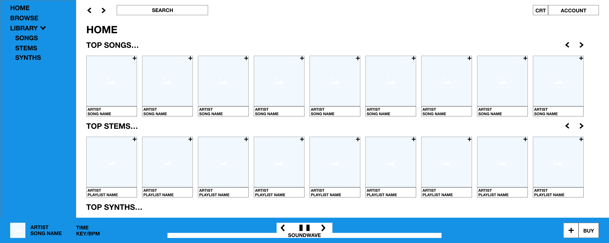
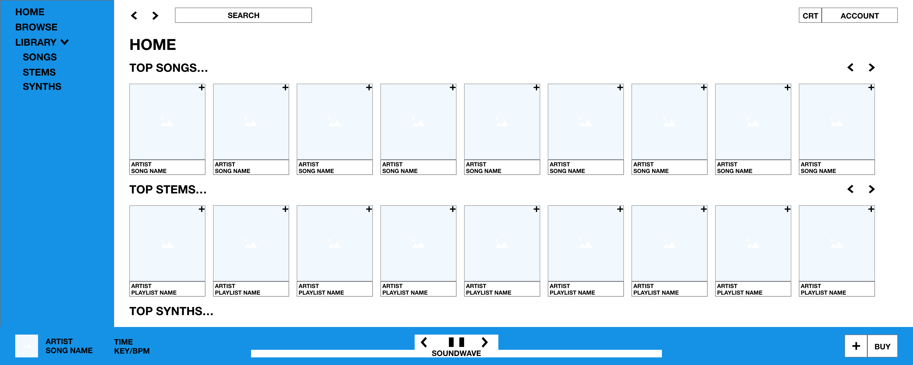

Project Description
SongSelect is an e-commerce website that sells music files with licensed samples and synths for producers. Required pages include a home and playlist page. The top navigation features include the search, cart, and account options. The left navigation features include the home, browse, and library (songs, stems, synths). The footer features include the plan controller, song information (cover, title, artist), soundwave, and save options. The home page features include a banner, and top charts (song, stems, synths). The playlist pages features include the playlist banner, song information (title, artist, BPM, time, key), filters (title, artist, BPM, time, key), save options, and related songs (cover, title, artist).
User Persona
Henry, 25, is a music producer and DJ in Los Angeles. He uses his iPhone to play music during any commute, but primarily uses digital audio workspaces, DJ software, and streaming services on his personal desktop. He describes, “My main priority is producing, and I’m tired of spending hours downloading files from countless websites and organizing my library. I’m a DJ at various local bars too, so having access to top songs and stems for my own shows is essential. My laptop is constantly out of storage, so I also need a platform to store my files on the cloud. If I’m not producing and on the move, I’ll be on my phone searching for new music on Spotify, SoundCloud, or BeatPort.” Henry needs a platform to manage and store all of his songs, stems, and synths for his production and DJ events, using a familiar interface that is capable of comprehensive sorting and filtering.
Prototypes


Wireframes


 
